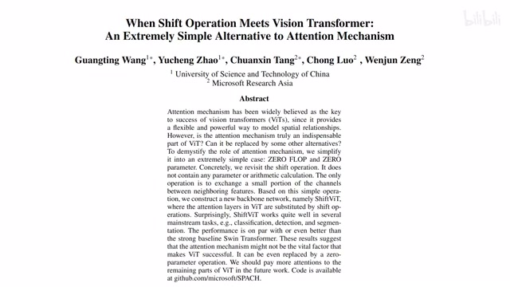
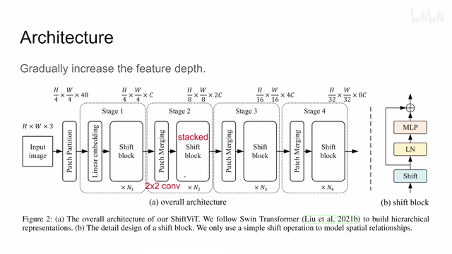
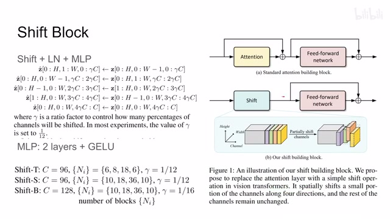
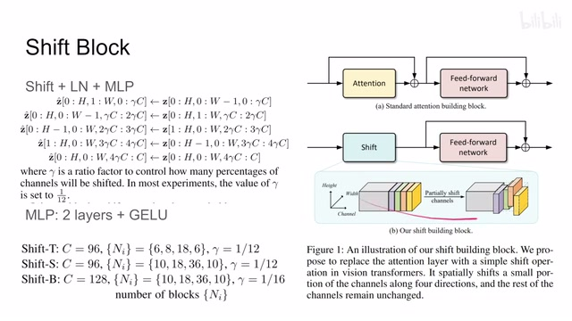
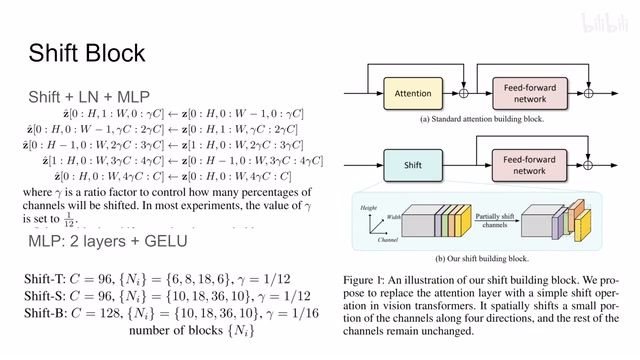
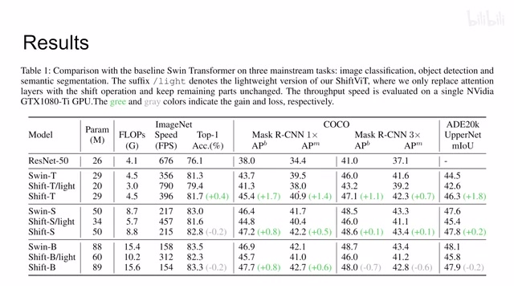
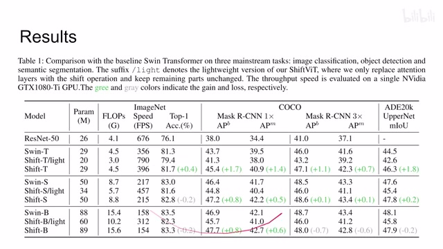
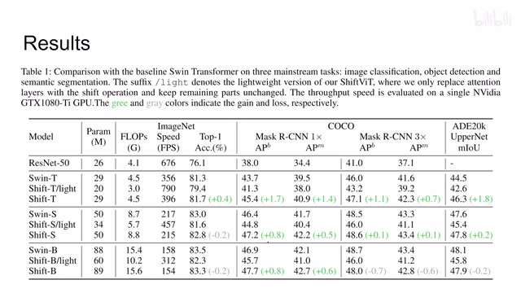
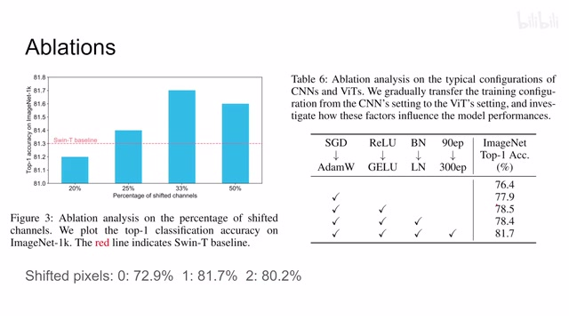

← 返回阅读库 · 原论文目录
论文讲解阅读文档 · 新模型 · v081
When Shift Operation Meets Vision Transformer[2201.10801]
视频时长 00:05:58；讲解文字 2,619 字符；提取讲解画面 13 张。按视频原顺序阅读，每段文字保留时间戳。
文字来自整段视频的自动语音转写，按自然停顿分段，并与 PPT / 论文页面 / 演示画面对齐。未将讲解压缩为摘要；术语、数字和口述公式请结合画面及原论文核对。 阅读稿已校正规范部分明确术语误识别；原始逐字稿和每处修改记录另行保留。
讲解画面为源视频截图（640×360），不是可编辑 PPT 文件。全片按每秒 2 帧扫描内容变化，逐步展开页保留；连续动画保留代表画面。清晰度受源视频限制。
下载完整资料包 · 含离线 HTML、PDF、Word、全部 PPT 画面和字幕。
原论文与材料
When Shift Operation Meets Vision Transformer: An Extremely Simple Alternative to Attention Mechanism · 下载完整 PDF（8 页）
按时间阅读
00:00:00–00:00:01 · 画面 001
00:00:00–00:00:01 · 画面 00100:00:01–00:00:39 · 画面 002

00:00:01–00:00:39 · 画面 002大家好今天我们来快速说一篇论文 When Shift Operation Meets Vision Transformer: An Extremely Simple Alternative to Attention Mechanism 我们知道这个 transformer 它无非就两部分一部分这个 attention 另一部分呢是这个 MLP 那在本文中呢作者说这个 attention 其实是不需要的我直接用一个 shift 就是直接去挪动这个 tensor 用它来替代这个 attention mechanism 这样子它实现起来非常高效
同时呢也没有什么需要学习的参数啊这个就是本文的核心的思想那么下面呢我们就来看具体的做人实现首先那么全文的一个结构呢本文呢就是直接沿用了这个 Swin Transformer 这个我们之前也介绍过那么一张图像进来高度和宽度对吧它是三通道图像
00:00:39–00:02:16 · 画面 003

00:00:39–00:02:16 · 画面 003首先呢打成这个 patch 每个 patch 呢是 4x4 的像素那这样三层道一共是 48 个像素 linear embedding 进来把它投成长度为 C 的这么一个 channel 然后这里呢区别于这个 Swin Transformer 的这个 block 这里呢作者直接使用了这个 shift block 用一串 shift block 给它叠起来那么随后我们具体讲这个 shift block 那叠完之后呢这边是 H 除以 4 这个 W 除以 4 乘以 C 这么一个 tensor 对吧那像 Swin Transformer 一样我们在两个 stage 之间我们需要把这个 patch 的尺寸变大深度变大 patch 的这个数量减少那怎么做呢 patch merging 其实就是一个 2 乘 2 的这么一个卷积把这个原来的 C 的 channel 变成 2C 的 channel 同时呢 patch 的数量每个边可减少一半
那同样的呢这边也是过这个 shift block 一次不断的重复不断重复最后呢还是提出 feature 来你后面做你想做的下游任务就可以了这个呢是本文作者提出的这个 shift vit 那么下面呢我们就具体来看这个 shift block 里面有什么了作者提出这个 shift block 只为做三件事公平公平还是走错了这个 shift operation layer normalization 和这个 MLP 啊这个就是一个 shift block 的这个结构那对比来看你如果跟正常的 attention transformer 来比较的话对吧还是就是整个这个 attention 加这个 skip connection 被替换成了这个 shift operation 那下面就有朋友问了这个 shift operation 是什么呢非常简单我这一个大的 tensor 我在这个 channel 这个尺度上我去切出四片来这个片呢它是有一定的厚度的不一定是只有厚度为一的
00:02:16–00:03:38 · 画面 004

00:02:16–00:03:38 · 画面 004有的片向左有的片向右有的片向上有的片向下各移一个像素齐活结束了这个深得汉岳府精髓同时这个画的图呢也很到位只不过 channel 这个方向呢给它标反了按照作者的这个代码的顺序呢应该是先从最低的这个 channel 开始算的不过完全不影响你都明白这个意思那么剩下的这个灰色部分呢就保持不变了这个呢就是本文的这个 shift block非常简单那至于像里面这个 MLP 呢就是两层的这个 MLP 第一层是从 C 扩展到倍数倍的 C 第二层呢是把这个倍数倍的 C 再压缩回这个 C 那同时呢中间是这个 GELU 这个激活函数它比 ReLU 要好一点那么还是正如作者所说的这种 shift 你完全没有需要学习的参数而且计算起来非常高效那这个意味着呢在同等的算力的要求下同等的参数量的要求下
你就可以叠更多层的这个 block 在每一个这个 stage 里，那么在此基础上呢，作者提出了三种不同尺寸的这个 shift vit 对吧？具体的参数在这里，像这个 ni 呢，就是每个 stage 它的这个 block 的数量啊，这个感兴趣的朋友可以仔细看一下。这个 gamma 呢，就是这里就是这一片这个 channel 的数量占整个 channel 数量的这个比例，然后呢，每次呢都是切四片。
00:03:38–00:03:39 · 画面 005

00:03:38–00:03:39 · 画面 00500:03:39–00:04:04 · 画面 006

00:03:39–00:04:04 · 画面 006结束了这个就是本文的这个实现，那么下面我们来看作者汇报的一些结果吧。首先呢，就是在各个程度上跟这个 Swin Transformer 的一个对比，我们把这个 attention 替换成了这个 shift 之后呢，它的这个准确率肯定是有下降，但是呢依然比 resnet 要好，同时呢参数量大减，速度飞快。那么当你再根据这个 Swin 的这个 baseline 把它这个参数量把它这个需要的这个运算给它补回来之后呢，那作者发现在这种小尺度的模型下，
00:04:04–00:04:38 · 画面 007

00:04:04–00:04:38 · 画面 007性能呢有一定的提升，同时呢在这个相对大尺度的一些情况下啊，我觉得结果是 comparable 的，这是一个很有意思的一个结论，而且是不同的下游任务啊，图像的分类啊，检测啊等等。那最后一个快速的 ablation，比如说我每次该 shift 多大比例的像素呢？有的测试了 20%25%33%看起来是一个不错的数值啊，所以呢每次只 shift 三分之一的深度的这个 tensor。
00:04:38–00:04:39 · 画面 008

00:04:38–00:04:39 · 画面 00800:04:39–00:04:43 · 画面 009

00:04:39–00:04:43 · 画面 00900:04:43–00:05:08 · 画面 010
00:04:43–00:05:08 · 画面 010然后作者还试了说每次 shift 多大对吧？如果完全不 shiftshift 一个像素就是默认的一个配置，shift 两个像素这是它的区别。那么最后还有一些我们在训练 Vision Transformer 的时候才使用的一些训练的一些方式，这些改进作者做了一些 ablation。所以总来说，这篇文章的 idea 真的不复杂，包括 shift 这种操作之前有很多论文提出了各种各样的方法。
00:05:08–00:05:09 · 画面 011
00:05:08–00:05:09 · 画面 01100:05:09–00:05:57 · 画面 012

00:05:09–00:05:57 · 画面 012其实大家都有很多的选择了，但是呢让人惊叹的是对吧？抹去了这个 attention 对吧？依然能够取得不错的结果，像之前有人说的这个 patches are all you need 对吧？还有这个 MLP-Mixer 这种东西的工作在一起了，连起来看呢就很有趣。那希望我们在未来能够进一步揭示说 Vision Transformer 它成功在哪，到底是哪个部分在发挥作用。
好的，那么以上就是我非常快速的一个对这个论文的一个介绍，本身一个很简单的论文，感谢你的收看，再见。
00:05:57–00:05:58 · 画面 013
00:05:57–00:05:58 · 画面 013转写与来源说明 · 0 个自动复核提示
保留 14 个原始语音片段，0 个片段触发自动复核提示。提示仅用于定位可能的术语、重复或识别问题，不等于已确认错误。
讲解画面为源视频截图（640×360），不是可编辑 PPT 文件。全片按每秒 2 帧扫描内容变化，逐步展开页保留；连续动画保留代表画面。清晰度受源视频限制。
原视频：paper/合集_2026-10-16_新模型/[论文简析]When Shift Operation Meets Vision Transformer[2201.10801].mp4
SHA-256：be6a7db57eac6d6a11e9b0e0287a8223d412c348b57de5ba908351feeb3012eb
全文按视频语音与画面制作。原论文可从上方链接下载；完整资料包保留全文、原始逐字稿、字幕和校对记录。